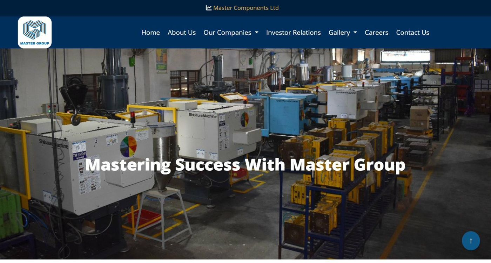

The company’s story wasn’t being told
- What I noticed
- A 27-year journey, and nobody telling it. LinkedIn was used for festival greetings.
- Why it mattered
- A listed company has shareholders, customers and suppliers who need to know where it came from and where it’s going. So do the people deciding whether to partner with it or apply for a job there.
- What I did
- Rebuilt the brand around the journey: story, vision, mission, colours and tone
- Revamped the website and the leadership’s visiting cards
- Turned LinkedIn into the place where shareholders, customers and partners follow the business
- Designed and reviewed the entire annual report with the Company Secretary’s team
- Built 30+ leadership decks, including the AGM deck
- Measured by
- +40% website traffic after the relaunch
- 100 to 1,000+ LinkedIn followers

What changed for the companyThe company now tells one story everywhere: on its website, on LinkedIn and in its annual report. Shareholders, customers and partners can follow what the business is doing.